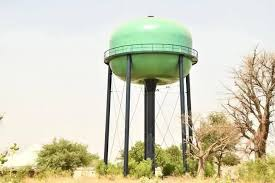

مشروع شبكة مياه مدينة يولا يحصل على تجديد
تنفّس السكان الصعداء بعد 15 عاماً من ندرة المياه
تأثير المشروع: الآن يتمتع آلاف السكان بإمكانية الوصول إلى مياه نظيفة وموثوقة.
نبذة عن المشروع
بعد 15 عاماً من نقص المياه الحاد، يمكن لسكان مدينة يولا بمجلس يولا الجنوبي الاسترخاء أخيراً بعد أن خضعت شبكة المياه لترقية كبيرة.

التحسينات المنفذة
- البنية التحتية: تجديد شامل لأنابيب المياه
- السعة: زيادة قدرة إمداد المياه
- التغطية: توسيع الشبكة لتشمل مناطق جديدة
- الجودة: تحسين مرافق معالجة المياه
فوائد للمجتمع
- الوصول الموثوق إلى مياه نظيفة
- انخفاض الأمراض المنقولة عن طريق المياه
- تخفيف العبء الاقتصادي عن الأسر
- تحسين معايير الصرف الصحي
خطط مستقبلية
- الصيانة: صيانة دورية للنظام
- المراقبة: فحوصات جودة المياه
- التوسع: خطط لتغطية مناطق إضافية
- المجتمع: برامج توعية عامة